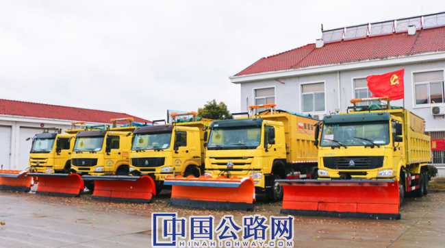
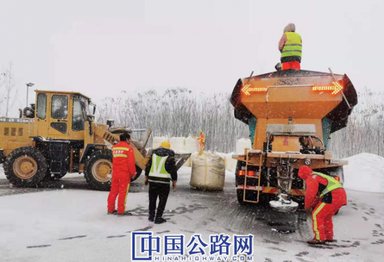
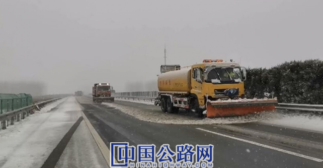
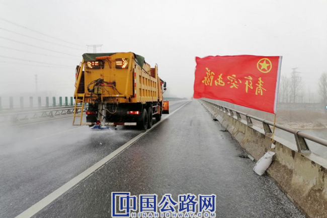

微官网
微官网
2020年12月28日，雨雪如期降临苏北路网，作为安全保畅和冬防除雪作业的主力军，江苏高速公路工程养护有限公司（简称“苏高速养护公司”）把冬防除雪作为重要政治任务，以“雪中保通、雪停路净”为工作目标，坚定主责主业，坚守保畅使命，发扬“特别能吃苦、特别能担当、特别能奉献”的企业精神，始终与“一路多方”协同作战，共同守护路网高速安全畅通，全力保障人民群众安全出行。
坚持全要素保障，准备措施到位
苏高速养护公司始终坚持“预防为主、防治结合”的工作原则，重点做好“提前动员、提前准备、提前演练、提前预防”“四个提前”工作。所属各单位提前储备约6000吨融雪剂、高效融雪剂1000余吨、5000吨瓜子片等常规应急除雪防滑物资；投入各类除雪设备800余台套；集结自有及协作人员3000余名，组织20支党团员突击队，用实际行动为公众出行保驾护航。

坚持全流程处置，指挥调度到位
苏高速养护公司以“雪中保通、雪停路净”为工作目标，坚持关键节点快速保通原则，推行“雪前撒布、相机推雪、先桥后路”的全链条梯队作业流程；针对桥梁桥面、匝道枢纽等重点区域，增设物资储备点，预先布设融雪剂和防滑料；根据京沪高速改扩建中借道行驶段落的特殊性，研究制定“自卸车转运积雪法、装载机翻雪法、开口清运法”等除雪方法；利用公司“智慧大脑”——养护作业指挥调度中心，运用全景相机、车载视频监控、网络对讲机等智能设备对道路雪情、除雪作业等精确调度和监管，时刻做好人员、设备、物资的机动调配与支援，确保除雪效率。公司充分发挥已有经验优势，多措并举，扎实推进，为打赢冬防除雪战役提供坚强保障。


坚持全天候守护，党员带头到位
苏高速养护公司制定领导干部冬防除雪分片包干制度，公司领导班子成员、各职能部门负责人分别划定责任区，分片驻点，靠前指挥，所属各单位负责人24小时坚守一线，从人员设备集结、责任段落划分、重要点位部署、除雪物资调度、除雪举措落实等方面全面部署。同时强化党建引领，建立起“党员干部带头、分组分片除雪”工作机制，所属党员突击队始终冲锋在前，党员干部始终率先垂范，守职尽责，开启昼夜不间断除雪的工作模式；与时间赛跑，鏖战风雪，用实际行动让鲜艳的党旗在保畅一线高高飘扬。

截至30日上午8时，共计撒布融雪剂2351吨，出动除雪人员3248个工日，出动除雪车辆与设备1029台/次，瓜子片477吨，所管养路网路面无积雪，道路保持畅通。